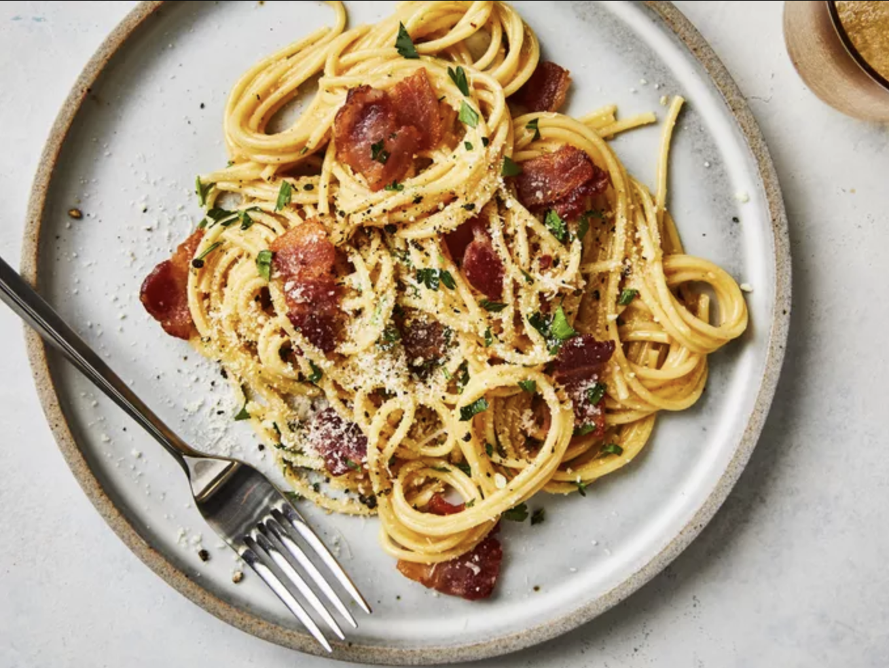

This beloved Allrecipes recipe features a rich, slow-simmered meat sauce made with sweet Italian sausage and ground beef, layered with noodles, creamy ricotta, mozzarella, and Parmesan cheese. While it requires some effort—including a 1.5-hour sauce simmer—it yields a deeply flavorful, restaurant-quality dish that has remained one of the internet's most popular lasagnas for over two decades.